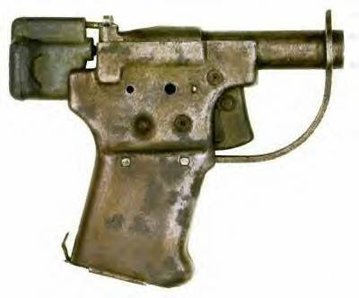
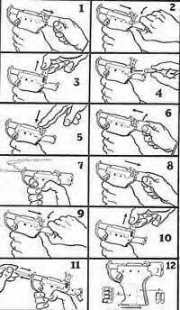

A Handgun Against An Army -- Ten Years AfterMike Vanderboegh
29 July 2008
"Bravo! Well said Sir! More truer words have rarely been spoken. You inspire and embolden us to protect and defend our rights. Please do not let your voice be silenced." -- "Anonymous" reaction to "What Good Can A Handgun Do Against an Army?" 2006.
Almost a decade ago now, I penned "A Letter From Hagood's Crossroads, Alabama," subtitled "What Good Can a Handgun Do Against an Army?"
Over the years it has proven to be the single most popular piece I have ever written. To this day, I get emails and snail mails from folks who have stumbled across it for the first time, thanking me for writing it. It is a humbling experience for a scribbler such as myself to realize that he has struck a chord in his audience -- humbling and gratifying.
Still, I have always meant to rework "Handgun" to correct some of the minor errors and irritating flaws that always occur whenever you whip out a topical opinion piece, as I did this one. For example, one of the things that always bothered me was that I was forced to paraphrase Hopper explaining the facts of life to his marauding gang of ATF/biker/bandido grasshoppers in "A Bug's Life." In the re-issue below, I correct that. Indeed, thanks to technological advances in the intervening years, I am now able to give you the YouTube link so you can HEAR Hopper's presentation of the dialectic of tyranny yourself with just a click of the mouse.
Incredible.
Another area requiring work was the wolf-sheep metaphor, which if I had just hewed to the wisdom of my grandpa imparted to me years ago would have more properly been (as I have corrected it below) a wolf-sheep-sheepdog metaphor. Don't ask me why I did it that way the first time. I wrote it, as most of my pieces back then and since, at one sitting in the wee hours of the morning.
And equally importantly, without the steadying hand of a good editor. (Here, I tip my hat to my friend David Codrea.)
In truth, for something that has been so well received for so long, at the time I gave it no more thought or care than any of the other many things I wrote during the Era of the Clintonista-Militia Cold War. Yet it is "Handgun" that has, apparently, stood the test of time. I will explore why I think this is in the afterword to this reissue.
For now, let me present again, with slight updated revision, "What Good Can A Handgun Do Against an Army?," with many thanks to my friends -- Peter at Western Rifle Shooters Association and Chris at Mindful Musings -- for the firm nudge prompting me to do so. -- MBV
"What Good Can A Handgun Do Against an Army?"
A friend of mine forwarded me a question a friend of his had posed:
"If/when our Federal Government comes to pilfer, pillage, plunder our property and destroy our lives, what good can a handgun do against an army with advanced weaponry, tanks, missiles, planes, or whatever else they might have at their disposal to achieve their nefarious goals? (I'm not being facetious: I accept the possibility that what happened in Germany, or similar, could happen here; I'm just not sure that the potential good from an armed citizenry in such a situation outweighs the day-to-day problems caused by masses of idiots who own guns.)"
If I may, I'd like to try to answer that question. I certainly do not think the writer facetious for asking it. The subject is a serious one to which I have given much research and considerable thought. I believe that upon the answer to this question depends the future of our Constitutional republic, our liberty and perhaps our lives.
My friend Aaron Zelman, one of the founders of Jews for the Preservation of Firearms Ownership told me once:
"If every Jewish and anti-nazi family in Germany had owned a Mauser rifle and twenty rounds of ammunition AND THE WILL TO USE IT (emphasis supplied - MBV), Adolf Hitler would be a little-known footnote to the history of the Weimar Republic."
Note well that phrase: "and the will to use it," for the simply-stated question, "What good can a handgun do against an army?", is in fact a complex one and must be answered at length and carefully.
It is a military question.
It is also a political question.
But above all it is a moral question which strikes to the heart of what makes men free, and what makes them slaves.
First, let's answer the military question.
Most military questions have both a strategic and a tactical component. Let's first consider the tactical.
A friend of mine owns an instructive piece of history. It is a small, crude pistol, made out of sheet-metal stampings by the U.S. during World War II. While it fits in the palm of your hand and is a slowly-operated, single-shot arm, it's powerful .45 caliber projectile will kill a man with brutal efficiency. With a short, smooth-bore barrel it can reliably kill only at point blank ranges, so its use requires the will (brave or foolhardy) to get in close before firing. It is less a soldier's weapon than an assassin's tool. The U.S. manufactured them by the millions during the war, not for our own forces but rather to be air-dropped behind German lines to resistance units in occupied Europe and Asia. They cost exactly two dollars and ten cents to make.
Crude and slow (the fired case had to be knocked out of the breech by means of a little wooden dowel, a fresh round procured from the storage area in the grip and then manually reloaded and cocked. It was so wildly inaccurate it couldn't hit the broad side of a French barn at 50 meters, but to the Resistance man or woman who had no firearm it still looked pretty darn good.



The theory and practice of it was this: First, you approach a German sentry with your little pistol hidden in your coat pocket and, with Academy-award sincerity, ask him for a light for your cigarette (or the time the train leaves for Paris, or if he wants to buy some non-army-issue food or a half- hour with your "sister"). When he smiles and casts a nervous glance down the street to see where his Sergeant is, you blow his brains out with your first and only shot, then take his rifle and ammunition. Your next few minutes are occupied with "getting out of Dodge," for such critters generally go around in packs. After that (assuming you evade your late benefactor's friends) you keep the rifle and hand your little pistol to a fellow Resistance fighter so he can go get his own rifle.Or, maybe, you then use your rifle to get a submachine gun from the Sergeant when he comes running. Perhaps you get very lucky and pickup a light machine gun, two boxes of ammunition and a haversack of hand grenades. With two of the grenades and the expenditure of a half-a-box of ammunition at a hasty roadblock the next night, you and your friends get a truck full of arms and ammunition. (Some of the cargo is sticky with "Boche" blood, but you don't mind, not terribly.)
Pretty soon you've got the best armed little maquis unit in your part of France, all from that cheap little pistol and the guts to use it. (One wonders if the current political elite's opposition to so-called "Saturday Night Specials" doesn't come from some adopted racial memory of previous failed tyrants. For even cheap little pistols are a threat to oppressive regimes.)
They called the pistol the "Liberator." Not a bad name, all in all.
Now let's consider the strategic aspect of the question, "What good can a handgun do against an army....?" We have seen that even a poor pistol can make a great deal of difference to the military career and postwar plans of one enemy soldier.
That's tactical.
But consider what a million pistols, or a hundred million pistols (which may approach the actual number of handguns in the U.S. today), can mean to the military planner who seeks to carry out operations against a populace so armed.
Mention "Afghanistan" or "Chechnya" to a member of the current Russian military hierarchy and watch them shudder at the bloody memories. Then you begin to get the idea that modern munitions, air superiority and overwhelming, precision-guided violence still are not enough to make victory certain when the targets are not sitting Christmas-present fashion out in the middle of the desert.
I forget the name of the Senator who observed famously, "You know, a million here and a million there, and pretty soon you're talking about serious money." Consider that there are at least as many firearms-- handguns, rifles and shotguns-- as there are citizens of the United States. Consider that in 1997 there were more than 14 million Americans who bought licenses to hunt deer in the country. 14 million– that's a number greater than the largest five professional armies in the world combined. Consider also that those deer hunters are not only armed, but they own items of military utility-- everything from camouflage clothing to infrared "game finders", Global Positioning System devices and night vision scopes.
Consider also that quite a few of these hunters are military veterans. Just as moving around in the woods and stalking game are second nature, military operations are no mystery to them, especially those who were on the receiving end of guerrilla war in Southeast Asia (or nowadays, Iraq and Afghanistan).
Indeed, such men, aged though they may be, are more psychologically prepared for the exigencies of civil war (for this is what we are talking about) than their younger active-duty brother-soldiers whose only military experience involved neatly defined enemies and fronts in the Grand Campaign against Saddam. (Of course, since I wrote these words, an entirely new generation of citizen soldiers have been manufactured in the twin crucibles of Iraq and Afghanistan, my own son among them.)
And not since 1861-1865 has the American military attempted to wage a war athwart its own logistical tail. Nor indeed has it ever had to use modern conventional munitions on the Main Streets of its own hometowns and through its' relatives backyards. Nor has it tested the obedience of soldiers who took a very different oath with orders to kill their "rebellious" neighbors, but that touches on the political aspect of the question.
But forget the psychological and political for a moment, and consider just the numbers. To paraphrase the Senator, "A million pistols here, a million rifles there, pretty soon you're talking serious firepower." No one, repeat, no one, will conquer America, from within or without, until its citizenry is disarmed. We remain, as a British officer had reason to complain at the start of our Revolution, "a people numerous and armed."
The Second Amendment is a political issue today only because of the military reality that underlies it. Politicians who fear the people seek to disarm them. People who fear their government's intentions refuse to be disarmed.
The Founders understood this.
So, too, does every tyrant who ever lived.
Liberty-loving Americans forget it at their peril.
Until they do, American gunowners in the aggregate represent a strategic military fact and an impediment to foreign tyranny. They also represent the greatest political challenge to home-grown would-be tyrants. If the people cannot be forcibly disarmed against their will, then they must be persuaded to give up their arms voluntarily. This is the siren song of "gun control," which is to say "government control of all firearms," although few self-respecting gun-grabbers are quite so bold as to phrase it so honestly.
Joseph Stalin, when informed after World War II that the Pope disapproved of Russian troops occupying Trieste, turned to his advisors and asked, "The Pope? The Pope? How many divisions does he have?"
Dictators are unmoved by moral suasion.
Fortunately, our Founders saw the wisdom of backing the First Amendment up with the Second. The "divisions" of the Army of American Constitutional Liberty get into their cars and drive to work in this country every day to jobs that are hardly military in nature. Most of them are unmindful of the service they provide. Their arms depots may be found in innumerable closets, gunracks and gunsafes. They have no appointed officers, nor will they need any until they are mobilized by events.
Such guardians of our liberty perform this service merely by existing. And although they may be an ever-diminishing minority within their own country, as gun ownership is demonized and discouraged by the ruling elites, still they are as yet more than enough to perform their vital task. And if they are unaware of the impediment they present to their would-be rulers, their would-be rulers are painfully aware of these "divisions of liberty," as evidenced by their incessant calls for individual disarmament. They understand moral versus military force just as clearly as Stalin, but they would not be so indelicate as to quote him.
The Roman Republic failed because they could not successfully answer the question, "Who Shall Guard the Guards?"
The Founders of this Republic answered that question with both the First and Second Amendments.
Like Stalin, the Clintonistas and other holders of the Imperial Presidency could care less what common folk say about them, but the concept of the armed citizenry as guarantors of their own liberties sets their teeth on edge and disturbs their statist sleep.
Governments, some great men once avowed, derive their legitimacy from "the consent of the governed." In the country that these men founded, it should not be required to remind anyone that the people do not obtain their natural, God-given liberties by "the consent of the Government." Yet in this century, our once great constitutional republic has been so profaned in the pursuit of power and social engineering by corrupt leaders as to be unrecognizable to the Founders. And in large measure we have ourselves to blame because at each crucial step along the way the usurpers of our liberties have obtained the consent of a majority of the governed to do what they have done, often in the name of "democracy"-- a political system rejected by the Founders.
Another good friend of mine gave the best description of pure democracy I have ever heard. "Democracy," he concluded, "is three wolves and a sheep sitting down to vote on what to have for dinner." The rights of the sheep in this system are by no means guaranteed.

This is why God in His wisdom, and the Founders in their sagacity, made sheepdogs.
Now it is true that our present wolf-like, would-be rulers do not as yet seek to eat that sheep. They still cast a nervous collective eye toward the sheepdogs among the flock. They are, however, most desirous that the sheep be shorn of taxes, and if possible and when necessary, be reminded of their rightful place in society as "good citizen sheep" whose safety from the big bad wolves outside their barn doors is only guaranteed by the omni-presence in the barn of the "good wolves" of the government.


Indeed, they do not present themselves as wolves at all, but rather these lupines parade around in sheepdog's clothing -- the sheepdog being an ancient and honorable vocation accepted by the sheep as a necessary burden for their safety -- and they yip and yowl insistently in off-key falsetto about the welfare of the flock and the necessity to surrender liberty and property "for the children", er, ah, I mean "the lambs." In order to ensure future generations of compliant sheep, they are careful to educate the lambs in the way of "political correctness," tutoring them in the totalitarian faiths that "it takes a barnyard to raise a lamb" and "all animals are equal, but some animals are more equal than others." Indeed, these wolves could only achieve what they have by convincing the flock (and most of the real sheepdogs) that they are protectors of the flock with its best interests at heart.
But here's the problem for these wolves parading as sheepdogs.
There are not enough of them to eat as well they please just yet without having their meal rudely interrupted.
True, they are outnumbered by the sheep, but they care not. Sheep, after all, are sheep. "If God had not wanted them shorn, He would not have made them sheep," the bandit leader Caldera tells Yul Brynner in "The Magnificent Seven."
What wolves DO care about is the threat posed to them by the real sheepdogs who the Founders of the flock with great foresight placed between the wolves of government and the flock of the people and charged with its protection -- the sheepdogs who these wolves merely pretend to be.
Real sheepdogs of course have no appetite for the lives and liberties of the sheep. They exist, they live for, they relish in, their role as the true guardians of the flock. Ready in an instant to lay down their lives for the defense of the helpless, they operate always within the Founders' carefully drawn borders, faithfully and honorably. Indeed, the concept of honor is most often found only in sheepdogs, for the sheep have no need of it in the day-to-day wandering of the flock and, as for the wolves, it gets in the way of their appetites. And these sheepdogs, the smarter, more perceptive ones among them, are infinitely suspicious of the lupine-mandarin class who continually try to overstep the boundaries the Founders of the flock set.
Every now and then, the appetite of the wolves is for an instant revealed too nakedly. Some tough old independent-minded ram refuses to be shorn, for example, and tries to remind the flock that they once decided affairs themselves -- they and the sheepdogs -- according to the rule of law of their ancestors and the Founders of the flock, and without the help of their "betters." When that happens, the fangs become apparent and the conspicuously unwilling are shunned, cowed, driven off or (occasionally) killed. This always happens when the real sheepdogs are looking the other way, or are mesmerized by some lupine excuse.
Sadly, over time the majority of the flock -- including many of the sheepdogs -- have learned over time not to resist the Lupine-Mandarin class which herds it. Their Founders, who were sheepdogs one and all, would have long ago chased off such usurpers. Any present members of the flock who think like that are denounced as antediluvian or mentally deranged.
Yet, the sheepdogs still stand ready and so the wolves must be gradual in their predations. Most of the sheepdogs are, after all, watching the perimeter of the Founders' grazing fields for threats from without, or are preoccupied with forays to foreign fields where other sheep are being victimized by other wolves. They are close, these wolves, into converting many sheepdogs into cooperating with their schemes. And there are some of the more alert sheepdogs that the lupines would like to punish, but they dare not-- for their teeth are every bit as long as their "betters."
Indeed, this is the reason the wolves haven't eaten many sheep in generations. To the wolves' chagrin, the honest sheepdogs are armed and they outnumber the wolves by a considerable margin. For now the wolves are content to watch the numbers of these honest sheepdogs diminish, as they are no longer fashionable in polite society. (Indeed, they are considered by the literati to be an anachronism best forgotten and such sheepdogs are dismissed by the Mandarins as "Tooth Nuts" or "Right Leg Fanatics".)
When the number of the sheepdogs fall below a level that wolves can feel safe to do so, the throats of the remaining guardians of the flock will be torn out and the eating of the sheep will begin. The wolves are patient, and proceed by infinitesimal degrees like the slowly-boiling frog. It took them generations to lull the sheep and the sheepdogs into accepting them as rulers instead of elected representatives. If it takes another generation or two to complete the process, the wolves can wait.
This is our "Animal Farm," without apology to George Orwell.
Even so, the truth is that one man with a pistol CAN defeat an army, given a righteous cause for which to fight, enough determination to risk death for that cause, and enough brains, luck and friends to win the struggle. This is true in war but also in politics, and it is not necessary to be a Prussian militarist to see it. The dirty little secret of today's ruling elite -- as represented by the Clintonistas, the "compassionate conservative" Bushies and the even scarier potential for tyranny embodied by the spell-binding Obama -- is that they want people of conscience and principle to be divided in as many ways as possible ("wedge issues" the consultants call them) so that they may be more easily manipulated. No issue of race, religion, class or economics is left unexploited.
Lost in the din of jostling special interests are the few voices who point out that if we refuse to be divided from what truly unites us as a people, we cannot be defeated on the large issues of principle, faith, the constitutional republic and the rule of law. More importantly, woe and ridicule will be heaped upon anyone who points out that like the blustering Wizard of Oz, the federal tax and regulation machine is not as omniscient, omnipotent or fearsome as they would have us believe. Like the Wizard, they fan the scary flames higher and shout, "Pay no attention to the man behind the curtain!"
For the truth is, they are frightened that we will find out how pitifully few they are compared to the mass of the citizenry they seek to frighten into compliance with their tax collections, property seizures and bureaucratic, unconstitutional power-shifting.
I strongly recommend everyone see the movie "A Bug's Life". Simple truths may often be found sheltering beneath unlikely overhangs, there protected by the pelting storm of lies that soak us everyday. "A Bug's Life", a children's movie of all things, is just such a place.

The plot revolves around an ant hill on an unnamed island, where the ants placate predatory grasshoppers by offering them each year one-half of the food they gather (sounds a lot like the IRS, right?). Driven to desperation by the insatiable tax demands of the large, fearsome grasshoppers, one enterprising ant goes abroad seeking bug mercenaries who will return with him and defend the anthill when the grasshoppers return. (If this sounds a lot like an animated "Magnificent Seven", you're right.)

Kevin Spacey as
Special Agent "Hopper,"
Bureau of Alcohol, Tobacco, Firearms and Seeds
in "A Bug's Life"
Special Agent "Hopper,"
Bureau of Alcohol, Tobacco, Firearms and Seeds
in "A Bug's Life"
The grasshoppers (who roar about like some biker gang or perhaps the ATF in black helicopters, take your pick) are, at one point in the movie, lounging around in a bug cantina down in Mexico, living off the bounty of the land. The harvested seeds they eat are dispensed one at a time from an upturned bar bottle. Three grasshoppers suggest to their leader, a menacing fellow named "Hopper" (whose voice characterization by Kevin Spacey is suitably evil personified), that they should forget about the poor ants on the island. Here, they say, we can live off the fat of the land, why worry about some upstart ants?
Hopper turns on them instantly. He manipulates the dispenser on the mouth of the bottle, and the seed strikes one of the dissenters in the chest, falling to the floor. "Did that hurt,?" Hopper asks. "No," says the dissenter derisively. "How about this one?" as he does it again. "Are you kiddin'?" says the gang member. "Well . . . HOW ABOUT THIS?!?" Hopper knocks the cap off the bottle and its entire contents rush out, inundating and crushing the three dissenters. Hopper then explains the facts of the tyrant's world to his gang:
Hopper: You let one ant stand up to us, then they all might stand up! Those puny little ants outnumber us a hundred to one and if they ever figure that out there goes our way of life! It's not about food, it's about keeping those ants in line. That's why we're going back! Does anybody else wanna stay?
[grasshoppers shocked - all the grasshoppers "rev up" their wings]
Molt: [motioning a fellow grasshopper] He's quite the motivational speaker, isn't he?
Hopper: Let's ride!
You can watch Hopper's explanation on YouTube right here:
Of course it comes as no surprise that in the end the ants figure out that they outnumber the grasshoppers a hundred to one, and when they do they free themselves in an instant.
Would that liberty-loving Americans were as smart as animated ants.
Courage to stand against tyranny, fortunately, is not only found on videotape or DVD. Courage flowers from the heart, from the twin roots of deeply-held principle and faith in God. There are American heroes living today who have not yet performed the deeds of principled courage that future history books will record. They have not yet had to stand in the gap, to plug it with their own fragile bodies and lives against the evil that portends. Not yet have they been required to pledge "their lives, their fortunes and their sacred honor."
Yet they will have to.
I believe with all my heart the lesson that history teaches: That each and every generation of Americans is given, along with the liberty and opportunity that is their heritage, the duty to defend America against the tyrannies of their day. Our father's father's fathers fought this same fight. Our mother's mother's mothers fought it as well. From the Revolution through the world wars, from the Cold War through to Iraq and Afghanistan, they fought to secure their liberty and safetyand those of the defenseless people of the world) in conflicts great and small, within and without.
They stood faithful to the oath that our Founders gave us: To bear true faith and allegiance-- not to a man; not to the land; not to a political party, but to an idea. That idea is liberty, God-given, inalienable liberty as codified in the Constitution of the United States. We swear, as did they, an oath to defend the Constitution against all enemies, foreign and domestic. And throughout the years they paid in blood and treasure the terrible price of that oath.
That was their day.
This is ours.
The clouds we can see on the horizon may be a simple rain or a vast hurricane, but there is a storm coming. Make no mistake.
Lincoln said that this nation cannot long exist half slave and half free. I say, if I may humbly paraphrase, that this nation cannot long exist one-third slave, one-third uncommitted, and one-third free. The slavery today is of the mind and soul not the body, but it is slavery without a doubt that Mandarin class, most recently embodied by Barack Obama, is pushing.
It is slavery to worship our nominally-elected representatives as our rulers instead of requiring their trustworthiness as our servants. It is slavery of the mind and soul that demands that God-given rights that our Forefathers secured with their blood and sacrifice be traded for false security of a nanny-state which will tend to our "legitimate needs" as they are perceived by that government.
It is slavery to worship humanism as religion and slavery to deny life and liberty to unborn Americans. As people of faith in God, whatever our denomination, we are in bondage to a plantation system that steals our money, erases our history -- supplanting it with sanitized and politicized "correctness" -- denies our children a real public education, denies them even the mention of God in school and denies, in fact, the very existence of God.
So finally we are faced with, and we must return to, the moral component of the question: "What good can a handgun do against an army?"
The answer is "Nothing," or "Everything."
The outcome depends upon the mind and heart and soul of the man or woman who holds it.
One may also ask, "What good can a sling in the hands of a boy do against a marauding giant?" If your cause is just and righteous much can be done, not only if you are willing to risk the consequences of failure and to bear the burdens of eternal vigilance.
A friend of mine gave me a plaque once. Upon it is written these words by Winston Churchill, a man who knew much about fighting tyranny:
"Still, if you will not fight for the right when you can easily win without bloodshed; if you will not fight when your victory will be sure and not too costly; you may come to the moment when you will have to fight with all the odds against you and only a precarious chance of survival. There may be a worse case. You may have to fight when there is no hope of victory, because it is better to perish than to live as slaves."
The Spartans at Thermopolae knew this. The fighting Jews of Masada knew this, when every man, woman and child died rather than submit to Roman tyranny. The Texans who died at the Alamo knew this. The frozen patriots of Valley Forge knew this. The "expendable men" of Bataan and Corregidor knew this. If there is one lesson of Hitlerism and the Holocaust, it is that free men, if they wish to remain free, must resist would-be tyrants at the first opportunity and at every opportunity. Remember that whether they come as conquerors or elected officials, the men who secretly wish to be your murderers must first convince you that you must accept them as your masters. Free men and women must not wait until they are "selected," divided and herded into Warsaw Ghettos, there to finally fight desperately, almost without weapons, and die outnumbered.
The tyrant must be met at the door when he appears. At your door, or mine, wherever he shows his bloody appetite. He must be met by the pistol which can defeat an army. He must be met at every door, for in truth we outnumber him and his henchmen.
It matters not whether they call themselves Communists or Nazis or something else. It matters not what flag they fly, nor what uniform they wear. It matters not what excuses they give for stealing your liberty, your property or your life. "By their works ye shall know them." The time is late. Those who once had trouble reading the hour on their watches have no trouble seeing by the glare of the fire at Waco. Few of us realized at the time that the Constitution was burning right along with the Davidians.
Now we know better.
We have had the advantage of that horrible illumination for more than fifteen years now-- fifteen years in which the rule of law and the battered old parchment of our beloved Constitution have been smashed, shredded and besmirched by the Clintonistas. In this process they have been aided and abetted by the cowardly incompetence and venal avarice of the Republican party. They have forgotten Daniel Webster's warning: "Miracles do not cluster. Hold on to the Constitution of the United States of America and the Republic for which it stands-- what has happened once in six thousand years may never happen again. Hold on to your Constitution, for if the American Constitution shall fail there will be anarchy throughout the world."
Yet being able to see what has happened has not helped us reverse, or even slow, the process. The sad fact is that we will have to resign ourselves to the prospect of having to maintain our principles and our liberty in the face of becoming a disenfranchised minority within our own country.
The middle third of the populace, it seems, will continue to waffle in favor of the enemies of the Constitution until their comfort level with the economy is endangered. They've got theirs, Jack.
The Republicans, who we thought could represent our interests and protect the Constitution and the rule of law, have been demonstrated to be political eunuchs, or worse. Alan Keyes was dead right when he characterized the 1996 election as one between "the lawless Democrats and the gutless Republicans." Nothing has happened in the years since to contradict that analysis. The major parties, as Pat Buchanan observed, "are two wings of the same bird of prey." The spectacular political failures of our current leaders are unrivaled in our history unless you recall the unprincipled jockeying for position and tragi-comedy of misunderstanding and miscommunication which lead to our first Civil War.
And make no mistake, it is civil war which may be the most horrible corollary of the Law of Unintended Consequences as it applies to the Clintonista-Bush-Obama Imperial Presidencies and their shared appetite for the destruction of the rule of law. Because such people have no cause for which they are willing to die (all morality being relativistic to them, and all principles compromisable), they cannot fathom the motives or behavior of people who believe that there are some principles worth fighting and dying for. Out of such failures of understanding come wars. Particularly because although such elitists would not risk their own necks in a fight, they have no compunction about ordering others in their pay to fight for them.
It is not the deaths of others, but their own deaths, that they fear.
As a Christian, I cannot fear my own death, but rather I am commanded by my God to live in such a way as to make my death a homecoming. That this makes me incomprehensible and threatening to those who wish to be my masters is something I can do little about. I would suggest to them that they not poke their godless, tyrannical noses down my alley. As the coiled rattlesnake flag of the Revolution bluntly stated: "Don't Tread on Me!" Or, as our state motto here in Alabama declares: "We Dare Defend Our Rights."
But can a handgun defeat an army? Yes. It remains to be seen whether the struggle of our generation against the tyrants of our day in the first decade of the 21st Century will bring a restoration of liberty and the rule of law or a dark and bloody descent into chaos and slavery.
If it is to be the former, I will meet you at the new Yorktown.
If it is to be the latter, I will meet you at Masada.
But I will not be a slave.
And I know that whether we succeed or fail, if we should fall along the way our graves will one day be visited by other free Americans, thanking us that we did not forget that, with the help of Almighty God, in the hands of a free man a handgun CAN defeat a tyrant's army.
Ten Years After
So why has "Handgun" apparently stood the test of time? It is not without its critics, you know. One fellow called it "bloodthirsty," another "paranoid." Yet another said it was "over-wrought, over-drawn and over the top." It does seem to some, even today in the disturbing light of the Olofson case, as "too combative," and "too scary to contemplate." In this it is not unlike any of the other many pieces I have written, some of which have even been labeled "seditious." "Handgun" certainly disturbs just as many people as it inspires. Does that say more about the writing, or the reader?
There are, it seems, many folks in the "Second Amendment community," whatever that is, who dislike my "absolutist" positions. These "pragmatists" say that they share my goals but not my methods, thinking apparently that tyranny can be deterred by the force of persuasion alone. I wish it were so, but it isn't. Not even a sloppy reading of our own history, let alone that of the world, could lead anyone but the most credulous or unrealistically optimistic among us to believe such a proposition.
As a good friend commented in an email to me upon the most recent contretemps occasioned by another of my "cold dead hands" letters:
The final question, at least to me, for the "politicals" (my preferred term, as I think the so-called radicals are FAR more pragmatic than the "democracy is both effective and safe!" crowd) is as follows:
"What do you guys plan to do if your approach demonstrably fails, either by the passage of AWB II, more Katrina/Iowa-style confiscations, or some other indicia that the political path is not yielding the intended results?"
The real answer for many is "we plan to redefine the objective to maximize our sporting uses of what we are allowed to keep."
Ain't no talking to folks like that....let their shackles rest heavy on them.
Sadly, he is no doubt correct.
With such "friends," to quote Don Rickles, "who needs enemas?"
"Where the Spirit of the Lord is, there is Liberty."
~II Corinthians 3:17~
Yet there are just as many, perhaps more, to whom "Handgun" still speaks, as one recent fan wrote me, "to our souls." I have sometimes felt that I have been too shy about my faith. Others, godless heathen libertarians no doubt (insert smiley face here), say I'm TOO religious.
But I think when I sincerely invoke, "the help of Almighty God," many, many more people who are not concerned or embarrassed by such sentiments are uplifted thereby. They recognize, as do I, that just as the Founders could not have pulled off the Revolution alone, we are not going to restore our Republic without the help of God's power. And so my references to that Higher Power which guides and informs our lives resonates with "gunnies" who are perhaps too "simple and unsophisticated" too be embarrassed by them.
The skeptical libertarians who ARE now made nervous by them will nevertheless one day be grateful to have such folks as allies in the great battle of our time.
And it will be a battle.
And it is coming, closer now than it was ten years ago.
Perhaps that is why "Handgun" still finds eager readers, because they understand this.
And they want to gird themselves spiritually before the fight.
If by reminding them that a handgun can defeat a tyrant's army I have helped prepare them for what's ahead, I am thankful to my God that He granted me the discernment to see it and the talent to communicate it.
struck a chord, indeed.
ReplyDeletei would not think it too extreme to suggest that should the audience be expanded to an appropriate degree, this essay may be the only "shot" an american need fire to put an end to the aggression of our time.
oustanding.
Samuel Adams, Patrick Henry, Tench Coxe, and, any other of the Founding Fathers would have been proud to have written such as this.
ReplyDeleteI, too, think you're over the top. I hope that the enemies of freedom that have subverted our Republic don't have their machineguns set up to cover no man's land in its entirety, 'cause I'll be with you in your attack on the would-be slaveholders. Keep the faith, keep your powder dry, and keep up the good work.
ReplyDeleteCHMountain
“A billion here, a billion there, and pretty soon you're talking about real money.”
ReplyDeleteEverett Dirksen quotes (American Senator, 1896-1969)
A great read, thanks for posting this!
Whenever I read/re read the sheep/dog/wolf analogy, I'm reminded of "Sheep" by the Pink Floyd:
ReplyDeleteHarmlessly passing your time in the grassland away;
Only dimly aware of a certain unease in the air.
You better watch out,
There may be dogs about
I've looked over Jordan, and I have seen
Things are not what they seem.
What do you get for pretending the danger's not real.
Meek and obedient you follow the leader
Down well trodden corridors into the valley of steel.
What a surprise!
A look of terminal shock in your eyes.
Now things are really what they seem.
No, this is not a bad dream.
The Lord is my shepherd, I shall not want
He makes me down to lie
Through pastures green He leadeth me the silent waters by.
With bright knives He releaseth my soul.
He maketh me to hang on hooks in high places.
He converteth me to lamb cutlets,
For lo, He hath great power, and great hunger.
When cometh the day we lowly ones,
Through quiet reflection, and great dedication
Master the art of karate,
Lo, we shall rise up,
And then we'll make the bugger's eyes water.
Bleating and babbling we fell on his neck with a scream.
Wave upon wave of demented avengers
March cheerfully out of obscurity into the dream.
Have you heard the news?
The dogs are dead!
You better stay home
And do as you're told.
Get out of the road if you want to grow old.
Somewhat prescient methinks.
Mark, great essay. Keep up the good work.
ReplyDeleteMeet me at the bridge.
Mike,
ReplyDeleteInsightful post. I think you note the essential aspect of the deterrent effect of an armed populace early in your article when you quoted Aaron Zelman:
"If every Jewish and anti-nazi family in Germany had owned a Mauser rifle and twenty rounds of ammunition AND THE WILL TO USE IT (emphasis supplied - MBV), Adolf Hitler would be a little-known footnote to the history of the Weimar Republic."
The will to use the weapon to defend innocent life (or protect fundamental human freedoms) is the key element, far more important than tactics or the quality or effectiveness of the available weaponry, although obviously those are important as well.
Not being petulant here, just pointing something out.
ReplyDeleteSome of us who are on your side don't believe in God. Don't throw away allies.
And because he believes in God and we don't, we should not throw away allies either. The enemy of my enemy is my friend, that always applies. Great read.
ReplyDeleteI think it should be mentioned that any time Obama is pointed out as a tyrant, McCain should have equal footing as well. Although I have a feeling the writer of this essay would agree with me anyway.
ReplyDeleteAlso, I must confess that despite my atheist beliefs (or more accurately lack thereof) I think this is probably one of the most inspiring essays I've ever read about our freedoms. You don't have to believe in God to realize the American dream, it was dreamed up for all who were willing to defend it.
I am 25 years old and watch closely as these events unfold. I have the blood of the rebels and revolutionaries in my veins and after just reading this for the first time I feel it pulsing. I can hear the battle cry as if it just happened outside my window and I swear I could visualize the smoke of burned powder. I am left in a completely surreal state and am forever thankful to the author for this work that will no doubt have its place in history. The reason I mentioned my age, is for the first time in my life just now I shed a tear for my country. Not that I all of a sudden feel patriotism, but nothing has ever made me feel this way before. It put into brutal perspective the battles fought and won by those in my ancestral lineage from patriots of the Continental Army to the militant factions of Cherokee Warriors that stayed behind in North Carolina, to those who lost their lives on Confederate battlefields fighting for freedom and liberty. I now have a distinct understanding of what it meant to them and the feeling that they are now speaking these truths to me. Thank you Sir.
ReplyDeleteThis piece changed my life.
Ryan
AND TO THE ATHIEST?? IF IT WAS NOT FOR GOD YOU COULDNT EVEN HAVE AN OPINION!!IF IT WAS NOT FOR JESUS CHRIST DEATH ON THE CROSS WE COULDNT EVEN BE IN THE PRESENCE OF ALMIGHTY GOD,MUCH LESS ESCAPE HELLFIRE.CHRIST IS ABSOLUTLEY REAL AND HIS IS GOD!!!AS FOR THIS ARTICLE.RIGHT ON!!! GIVE ME LIBERTY OR GIVE ME DEATH.DEATH IS JUST THE BEGINNING. WHERE WILL YOU SPEND IT?
ReplyDeleteFaithful:
ReplyDeleteThere were atheists as part of the Founding generation.
Then, as now, if a man stands his post and does his duty, his theology is his business.
While I feel that you and I would find many an issue upon which to disagree, the desperate necessity for Defenders of the Republic to stand and act. To educate our sheep, to awaken our sleeping sheepdogs, to take the responsibility of truly understanding our Constitution and bearing witness to its Truths and combating it's piecemeal destruction at the hands of our corrupted elected officials. This is in no way a political call -- the Republicans attack the Constituion from a Christian angle, attempting to marry Church and State in a way the Founding Father explicitly intended to avoid, while the Democrats attack it from a Humanist angle, appealing to compassion or on occasion to a completely illusory "common sense" to justify increasing the tax burden while removing our means to resist it. Both parties are over-run with "wolves", and those junior congressman who tow the party line are little more than crows -- following the pack to the kill so they can pick our skeletons dry.
ReplyDeleteConcerned American....
ReplyDeleteDiest and Atheist are not one in the same. Might want to consider the difference.
Try this site for further information on just how our predominantly Christian nation was founded by predominantly Christian people.
www.wallbuilders.com
Sean King
Mesa, AZ
(sorry, no blogger account).
Nor is a Diest and a Christian the same. "God" did and does not mean the same to each.
ReplyDeleteI can see how some folks, who have led a sheltered life would think this piece "over the top". I also think that they've got a yellow streak a block wide and a mile long running down their back and deserve neither liberty nor freedom.
ReplyDeleteYou can find these people in large population centers where political machines have grown and are able to control the populations with out question. AWhen tyranny happens in these places..other citizens look away instead of coming to the relief of the oppressed.
these people look at us as if we're backwards.
I'd sure hate to walk the distance between what these folks think they know and what they actually know.
Not all of us in the Burbs are cowards. The real issue is its hard to see the forest for all of the trees in the way. I can't come running to the defense of my brothers if I am not aware of a problem. Now that I have turned off my TV permenently and only get my news from the interwebs and make up my own mind on what is really going on I am getting VERY P1553d off! The sheep won't take off the blinders nor would I ex[ect them too. Now that this Sheepdawg has awakened I am preparing to be that One Gun against the armys. I only hope that it isn't to become a Martyr. I would like to live to see a world my granddaughter isn't a lave in. But as the story unfolds I will be one of the active ones and defend that which I believe in and it isn't the current facsimile of a government that we now have.
ReplyDeleteSorry TowerClimber but not all of the 'burbinites' are cowards not willing to run to the defense of our brothers. The real issue is that its hard to see the forest because of all the trees in the way. For every sheepdog in the city there are 100 sheep (or more)in the way making it diffcult to communicate.
ReplyDeleteThe biggest thing about a revolution is communication. It all has to start somewhere(here being a great start) But ultimately there is going to have to be action too. I see key people coming into postition and I get a warm feeling about the future. I see Ron Paul taking a stand DAILY on the hill and in the media. the man has been called so many different things by his peers and the media and yet he steps up every day and won't back off the wolves. Thats a true Sheepdawg! I am finding my corner of the pasture now and believe me: when they come for my 'herd' they will find out I have teeth.
My friend, I share your enthusiasm when it comes to such issues as the right to bear arms, but I really must point out your hypocrisy when it comes to religion. If you are such a firm believer in the constitution and the rights of the citizenry of this great nation, then why do you feel the need to complain about the fact that people are being granted their first amendment right of freedom of worship. If anything it is a good thing that the school system is no longer cramming your creation story down the throats of my peers and I (I attend public high school). I have a right to form my own religious beliefs and I should not have yours crammed down my throat at a government funded school. Which brings me to a new point, public schools are funded by the government and the government and the various religious bodies are supposed to be separate, so how can religion be ethically taught in school. Religion in schools is quite frankly a sick abomination and a flagrant violation of the right of those in attendance. My friend, you are encouraging Americans fight the good fight on one front by keeping the forces of oppression at bay however you would have us simultaneously open the side gate and admit another potential tyrant. Allowing religion to saturate our government will create the same issues of intolerance that men have struggled so hard to overcome, the same intolerance you show here when you whine about how your god's creation story is no longer taught in schools. Good day to you!
ReplyDeleteSUPERB!
ReplyDeleteExcellent piece. Well met.
ReplyDeleteAs far as the Atheist/Christian goes, I learned one thing if nothing else during my time in the military.
All that matters on the line is that the man beside you hold true. I do not care if you are black, white, Asian descent, Protestant, Catholic, Jewish, Atheist, Rebel, Yankee, Cowboy or Indian. If you stand beside me and fight for the right, you are friend and worthy.
Wait and see if you don't agree.
Good read...
ReplyDeleteI think a better title for your piece should have been " ...and the will to use it..."
Thats what its really all about isn't it? What good is a weapon if you choose not to use it? What good is keeping your "powder dry" if you choose not to use it?
"How" to use it once its decided its use is necessary is another topic. Personally, I don't want to die in my home holding out against the people who came to take my guns or other property away, even if I take a few with me, it was ultimately pointless. No one will hear of your "heroism"... The media will make sure of it.
I would rather use my weapons in an all out effort to reestablish the constitution and the principles behind it as the guiding principles of a nation. Be it THIS nation as it exists today or a new one we carve out of the dead husk of the old (yes, im talking about taking a state our two and splitting off from the union)
People like me value their freedom and liberty and efforts such as the one needed to reestablish those things, by default puts a hold on those things. However, I would rather fight through the darkest hell, sacrificing every pleasure and freedom I crave if that fight would ensure(for another few hundred generations) those very same freedoms and liberties.
"...They tell us, sir, that we are weak -- unable to cope with so formidable an adversary. But when shall we be stronger? Will it be the next week, or the next year? Will it be when we are totally disarmed, and when a British guard shall be stationed in every house? Shall we gather strength by irresolution and inaction? Shall we acquire the means of effectual resistance, by lying supinely on our backs, and hugging the delusive phantom of hope, until our enemies shall have bound us hand and foot?
Sir, we are not weak, if we make a proper use of the means which the God of nature hath placed in our power. Three millions of people, armed in the holy cause of liberty, and in such a country as that which we possess, are invincible by any force which our enemy can send against us. Besides, sir, we shall not fight our battles alone. There is a just God who presides over the destinies of nations, and who will raise up friends to fight our battles for us.
The battle, sir, is not to the strong alone; it is to the vigilant, the active, the brave. Besides, sir, we have no election. If we were base enough to desire it, it is now too late to retire from the contest. There is no retreat but in submission and slavery! Our chains are forged! Their clanking may be heard on the plains of Boston! The war is inevitable -- and let it come! I repeat it, sir, let it come!"
I've read the essay, I've read all of these posts and I'm kind of surprised no one sees a problem. Think about it kiddies.
ReplyDeleteEvery sheepdog has wolf DNA flowing in his veins.
My friend, the essay is a magnificent chocolate, and this is the nut:
ReplyDelete"If it is to be the former, I will meet you at the new Yorktown.
If it is to be the latter, I will meet you at Masada.
But I will not be a slave."
This pistol-packin' mamma burst into tears when I read it.
Amen, my Brother. I'll have your back.
3rd Herd,
ReplyDeleteAll men have same DNA as mass murderers and rapists, too. Yet, somehow, they refrain.
Biology is not destiny.
This definitely strikes a chord. I've taught Citizenship in the Nation for Boy Scouts for years, and I have always taught the boys that the 2nd Amendment is the safety valve of the Republic. It's there to keep the government honest.
ReplyDeleteOne other thing. To expand on your wolf/sheep/sheepdog analogy...
http://www.killology.com/sheep_dog.htm
If you've never read this essay from the book by Lt. Col. Dave Grossman, it's worth your time.
Thanks for a wonderful essay and putting so many of my thoughts into words.
This definitely strikes a chord. I've taught Citizenship in the Nation for Boy Scouts for years, and I have always taught the boys that the 2nd Amendment is the safety valve of the Republic. It's there to keep the government honest.
ReplyDeleteOne other thing. To expand on your wolf/sheep/sheepdog analogy...
http://www.killology.com/sheep_dog.htm
If you've never read this essay from the book by Lt. Col. Dave Grossman, it's worth your time.
Thanks for a wonderful essay and putting so many of my thoughts into words.
In 1994, I heard some guy on the radio talking about how the Second Amendment was designed to facilitate bloody armed insurrection against an oppressive government.
ReplyDeleteI sat there thinking "this guy is a lunatic." I mean, that's not how it was presented in my High School's 'American History' class.
The though of revolution was chilling. And, there wasn't any reason to revolt, anyway. Right?
But, something about what he was saying kept gnawing at me: it was true.
Since then, I've found many things to be both true, and quite unsettling.
Not among the least, watching the government I had once believed to be the source and guarantor of my rights and civil liberties show itself to be by far the single largest threat to those rights and liberties.
I believe that it will not just be the armies of our enemies that we should stand ready against, but the sheeple who will be coming to our doors, en masse, demanding any and everything we have. Driven to starvation and convinced of their own entitlement, these people will be encouraged and driven like sheep by the armies of the gubbermint will want to disarm us, as they tried during Katrina and the Iowa floods, to ensure that we will be swept away by their own adherents.
ReplyDeleteTruly, the only question is - Who will have the will to kill? Because, sadly, too many won't.
Aleksander... and you find there is complaint here about First Amendment rights? You are truly mistaken in this estimation of Mike's dissertation. You are a student of a 'public high school'. How sad. Your young mind is being crammed with nonsense and liberal theology of which your parents probably have no idea.
ReplyDeleteYou want to espouse your rights to 'religious freedom' under the First Amendment, but want to deny Mike's rights under the same Amendment? Such hypocrisy on your part as well (though I see no part where Mike is forcing his beliefs down your throat, but is rather stating his beliefs, making clear where he stands and is coming from). A government funded school- such a waste of public monies: why should my money- being I have no children in any school public or private- be spent on educating you, or any of your 'peers', in a belief system I do not condone?
How can religion be 'ethically taught in public schools'? you ask... and I ask, "How can fraudulent science be taught as fact, while using my money to perpetrate this lie?"
As to being a "sick abomination and flagrant violation of the rights of those in attendance" is in itself a sick and flagrant violation of parental consent and the very Amendment you espouse as being the private domain of yours and your peers when, in actuality, you have no 'rights' or domain whatever so long as you are under your parent's tutelage. You are a minor and until you become an adult, you have little say in what your parents decide.
You seem to feel defending this great country against the forces of evil now against it is opening the door for another tyrant, yet your understanding of what is actually at stake is abysmally lacking: it isn't 'another tyrant' (in your weak mind it's 'religion') that we must defend against- the Constitution already protects you from that- except that we've allowed educators in who teach you principles contrary to the Constitution itself: tell me, how is teaching evolution different than teaching creation? Or how is teaching Goreball warming different than teaching God is in control?
Child, you have much to learn- hopefully your eyes will be opened before they're permanently closed.
Shy III
(OMG, Mike- the verification word is RANGL!)
Some here have referred to the separation of the races. I'm Black and a vet. My hubby and I are armed patriots, having voted with the Repubs for the past 13 years.
ReplyDeleteWe live in the inner ring suburbs and are preparing ourselves for what is coming. As conservatives we understand the fight for liberty. My question is how many of you would stand side by side with us? MANY of our vets are minorities. And although too many conservative blacks turned coat and voted for Hussein, the veil has been torn away and they are joining the tea party!
If there is a civil war, I exhort you to remember that there is more to me than the color of my skin. I am armed and willing to support and defend the Constitution of this great land, this time out of uniform! For God, and country...
Stacy:
ReplyDeleteYour message needs to be spread near and far.
We'd be happy to publish an essay on the topic.
Just found this essay and had to comment. I agree with the guy that said the title could be "will to use it". That is the first topic I discuss in weapon use, selection and training interrogatories. It really can't be expressed strongly enough. If you can't pull the trigger, the result is gonna be a crapshoot. If you hesitate, you'll probably die with the weapon in your hand or your opponents.
ReplyDeleteKeep up the good work! You're a blessing to the 3% of us that'll meet at (Masada)?
John
Thank you. So very true, what you laid out. May He bless us in what is coming.
ReplyDeleteStacy,
ReplyDeleteCouldn't care less if you have a green eye in the middle of a purple forehead on top of a multicolored body w/ stripes. If you have my back I'll have yours. This is something we're all gonna have to prove, soon, regardless of how we look.